DjmThe Weekly Art
Week after week, Djm gives Nous Research and Hermes a different visual world to inhabit. This collection brings together his recurring community artwork—from intimate pixel-art scenes to sweeping surreal landscapes and richly textured graphic compositions. These twelve selected works offer an opening into a larger, ongoing body of weekly art.
Places to enter
A house in the blue night. A path into the distance. A light held above a network of machines. These scenes make room for a viewer to pause, look, and imagine what lies beyond the frame.

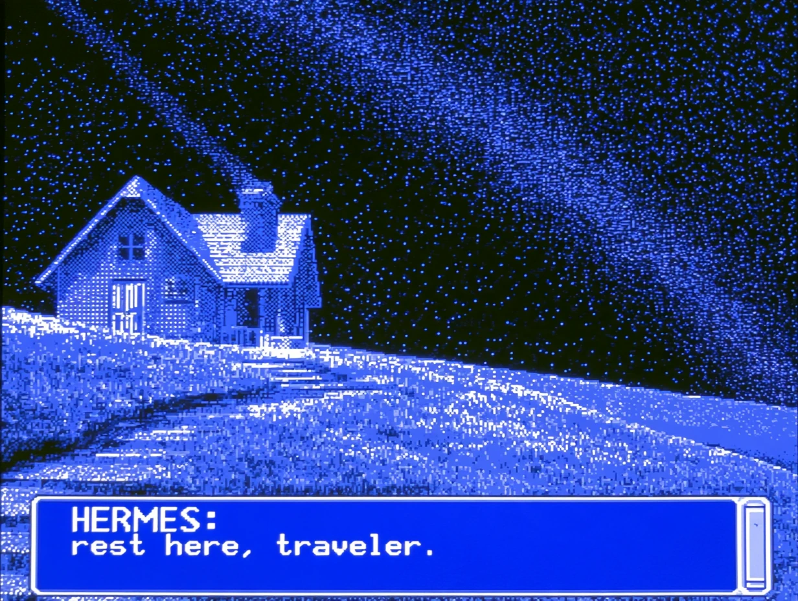
A blue pixel-art house beneath a star-filled sky; a dialogue box reads “HERMES: rest here, traveler.”

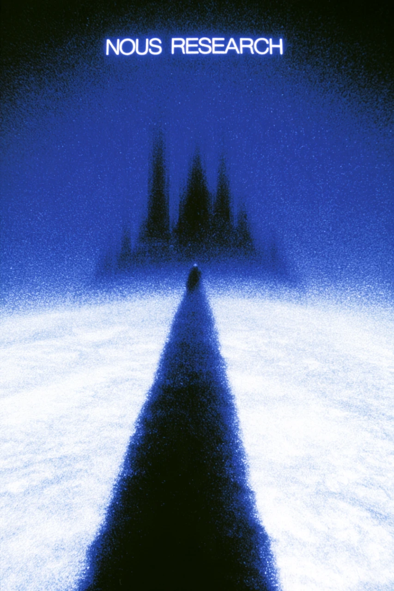
A blue path crosses a pale landscape toward distant dark spires.

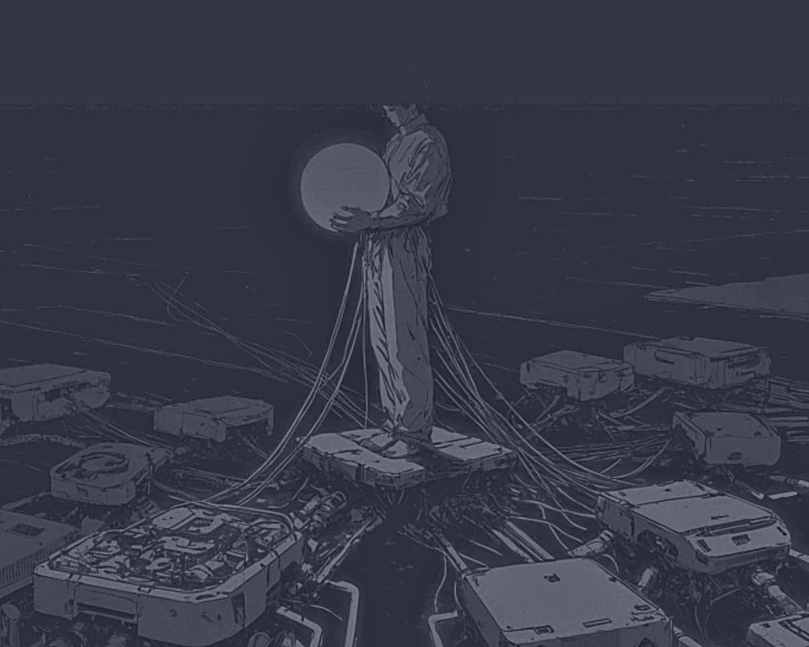
A figure holds a luminous orb above a field of connected machines.

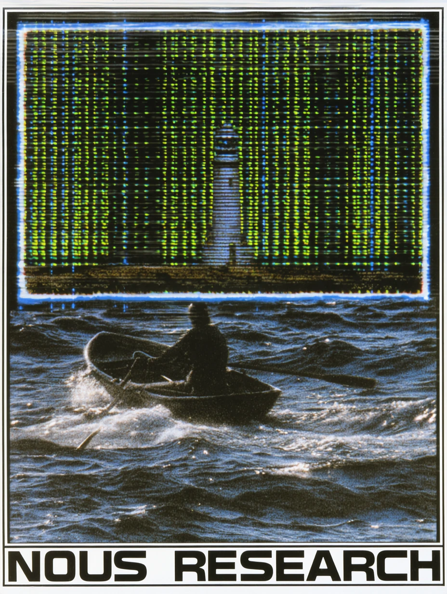
A figure in a boat faces a lighthouse beneath a curtain of green light.
The familiar, transformed
The everyday changes scale and texture: a computer becomes an object of wood, ants become a procession, and a city gathers around a brilliant circle. Nous and Hermes appear as parts of these visual worlds.

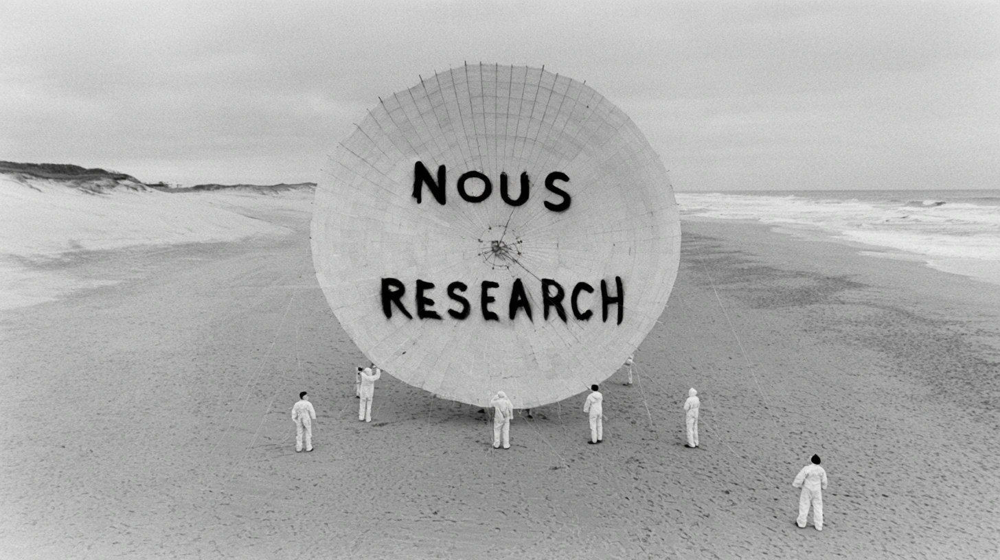
Small figures gather around a monumental circular NOUS RESEARCH structure on a monochrome beach.

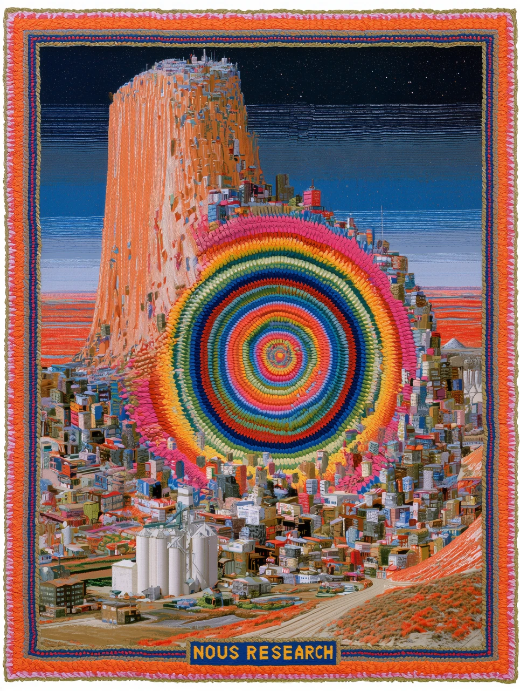
A multicolored circular form rises above a densely packed city.

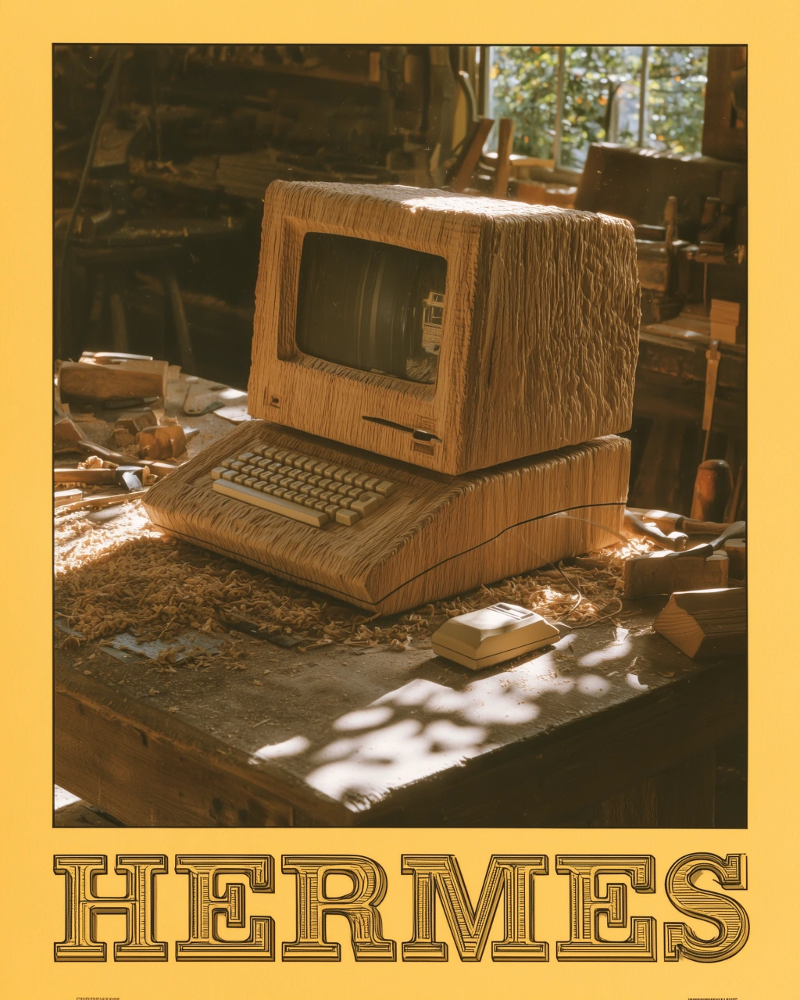
A wood-textured computer in a sunlit workshop, framed by HERMES lettering.

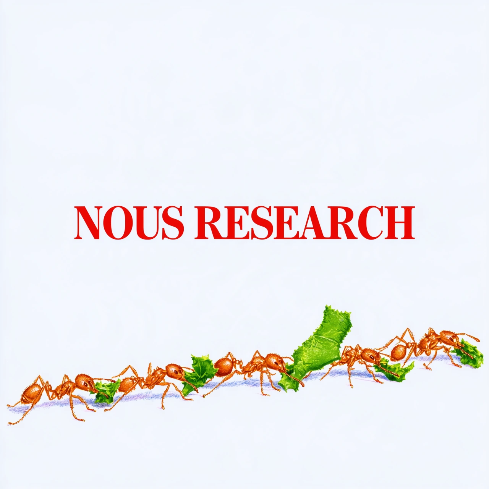
A line of leaf-carrying ants beneath red NOUS RESEARCH lettering.
Image, pattern, signal
Bold portraits and restless surfaces give way to compositions within compositions. The multi-panel works remain intact here, so their contrasts and internal rhythms can be seen together.

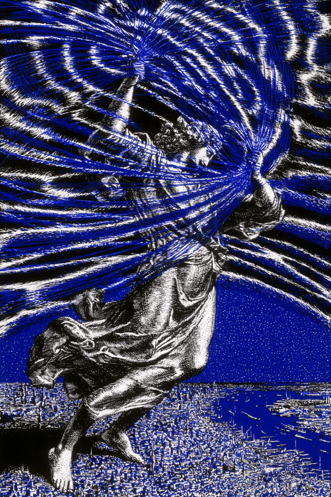
A silver figure encircled by blue and white ribbons.

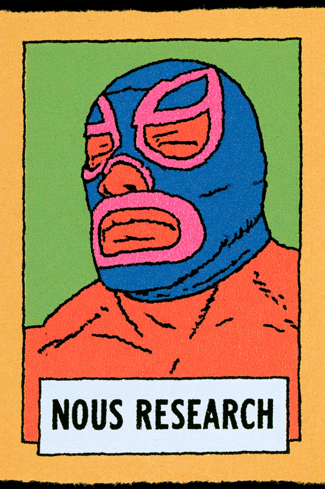
A blue and pink masked portrait framed in yellow and green.

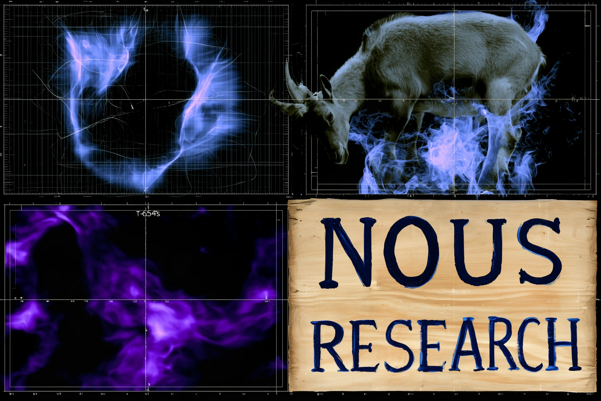
A four-panel composition of blue and purple forms, a horned animal, and NOUS RESEARCH lettering.

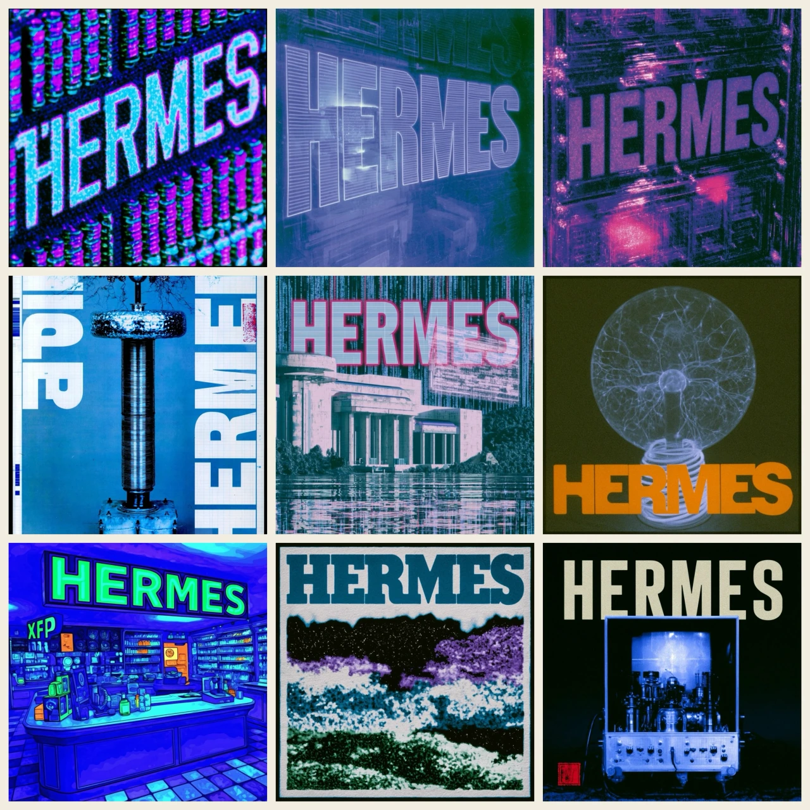
Nine panels bring together HERMES lettering, architectural forms, and luminous color.
Artwork by Djm.
Djm creates recurring community artwork for Nous Research and Hermes. All twelve selected works in this collection are credited to him.
An opening selection from a larger, ongoing body of work—not an exhaustive survey. The groupings and short descriptions are editorial guides, not artist-supplied titles or a chronology. Each image is presented in full, including the multi-panel compositions.
No reuse license is stated for these artworks.
Return to the collection ↑